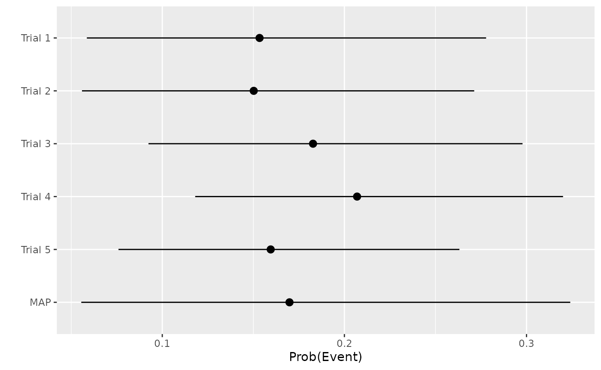
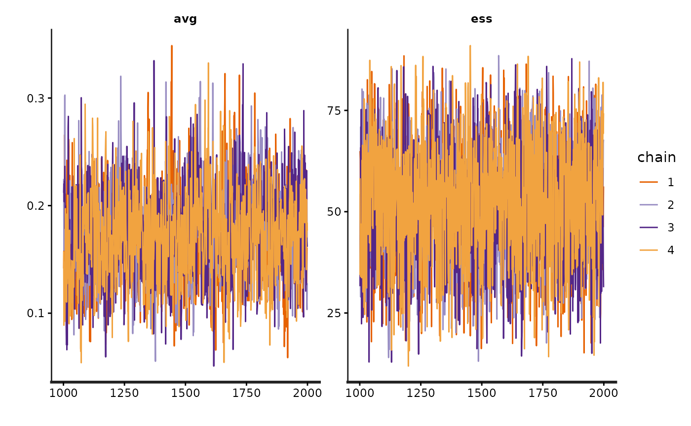
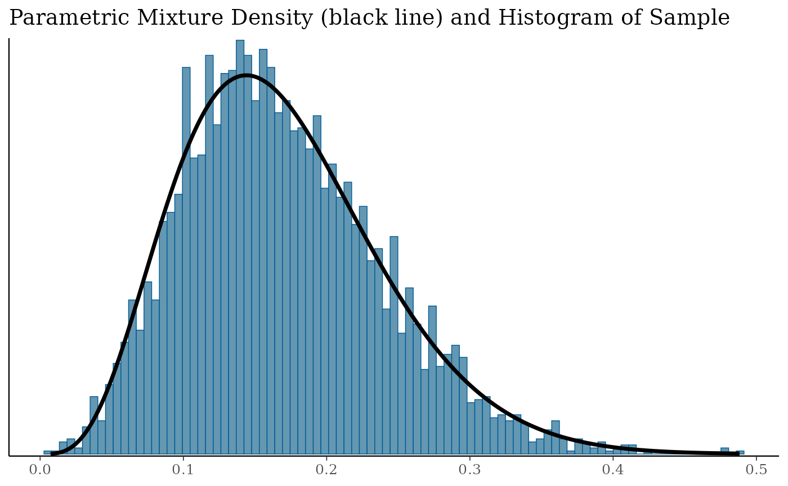

MAP method for generating a prior from historical studies with patient-level data
Let us create some patient-level historical study data for placebo patients collected from 5 studies.
set.seed(2024)
N <- 100
trial <- sample(1:5, size = N, replace = TRUE)
time <- 0.4 * trial + rexp(N, 20) # Later studies were longer
hazard <- 0.15
prob <- 1 - exp(- hazard * time)
y <- rbinom(N, size = 1, prob = prob)
library(dplyr)
hist_df <- tibble(trial, y, time, prob)
hist_df %>%
group_by(trial) %>%
summarise(
mean_prob = mean(prob),
events = sum(y),
n = n(),
event_rate = mean(y),
mean_tar = mean(time),
.groups = "drop"
)
#> # A tibble: 5 × 6
#> trial mean_prob events n event_rate mean_tar
#> <int> <dbl> <int> <int> <dbl> <dbl>
#> 1 1 0.0675 1 26 0.0385 0.466
#> 2 2 0.119 1 16 0.0625 0.845
#> 3 3 0.171 5 20 0.25 1.25
#> 4 4 0.220 9 23 0.391 1.66
#> 5 5 0.264 4 15 0.267 2.04We see that in this example, all studies are fairly small but later studies are longer and therefore see more adverse events. Nevertheless, the hazard in all studies is 0.15 so that the true in each study is:
1 - exp(-hazard)
#> [1] 0.139292We can attempt to recover these quantities by fitting the above
meta-analytic model using bssd:
x <- stan_map_patient_data(y = y, trial = trial, time = time,
a_alpha = 1 / 3, a_beta = 1 / 3, b_alpha = 5, b_beta = 5,
refresh = 0, seed = 2024)The refresh = 0 parameter suppresses sampling messages
from Stan. Note that the seed setting for R and Stan are independent, so
setting seed for both R and Stan are necessary for reproducible
results.
We provided hyperpriors and . The prior on is uninformative. The prior on suggests that we expect 50% borrowing, with associated 95% credible interval .
The returned object contains the Stan model fit:
print(x$fit)
#> Inference for Stan model: map_prior_patient_data.
#> 4 chains, each with iter=2000; warmup=1000; thin=1;
#> post-warmup draws per chain=1000, total post-warmup draws=4000.
#>
#> mean se_mean sd 2.5% 25% 50% 75% 97.5% n_eff
#> a 0.17 0.00 0.04 0.10 0.14 0.17 0.20 0.26 1166
#> b 0.52 0.00 0.14 0.24 0.42 0.52 0.62 0.79 2741
#> pi_h[1] 0.15 0.00 0.06 0.06 0.11 0.15 0.19 0.28 1859
#> pi_h[2] 0.15 0.00 0.06 0.06 0.11 0.14 0.19 0.27 1469
#> pi_h[3] 0.18 0.00 0.05 0.09 0.14 0.18 0.22 0.30 1982
#> pi_h[4] 0.21 0.00 0.05 0.12 0.17 0.20 0.24 0.32 2317
#> pi_h[5] 0.16 0.00 0.05 0.08 0.12 0.16 0.19 0.26 2053
#> pi_star 0.17 0.00 0.07 0.06 0.12 0.16 0.21 0.32 1915
#> pi_star_alpha 8.88 0.08 3.30 3.23 6.55 8.60 10.90 16.06 1631
#> pi_star_beta 43.00 0.23 12.10 19.42 34.42 42.92 51.73 66.05 2786
#> avg 0.17 0.00 0.04 0.10 0.14 0.17 0.20 0.26 1166
#> ess 51.88 0.27 14.34 23.89 41.90 51.96 62.24 78.84 2741
#> lp__ -55.93 0.06 2.24 -61.40 -57.19 -55.53 -54.27 -52.76 1378
#> Rhat
#> a 1
#> b 1
#> pi_h[1] 1
#> pi_h[2] 1
#> pi_h[3] 1
#> pi_h[4] 1
#> pi_h[5] 1
#> pi_star 1
#> pi_star_alpha 1
#> pi_star_beta 1
#> avg 1
#> ess 1
#> lp__ 1
#>
#> Samples were drawn using NUTS(diag_e) at Fri Oct 16 08:31:55 2026.
#> For each parameter, n_eff is a crude measure of effective sample size,
#> and Rhat is the potential scale reduction factor on split chains (at
#> convergence, Rhat=1).The
terms are reflected by the pi_h variables in the Stan
model. From the forest plot:
forest_plot(x)
we see that:
- the study-specific means are close to the true value;
- the MAP mean is also close to the true value;
- the MAP distribution is slightly wider than the individual study distribution (the additional uncertainty arises from study-to-study variability).
Given that the underlying Stan model fit is provided, the usual routines and methods useful for Stan fits are available to us. For example, to produce a trace-plot:

At this point, our beliefs are represented by MCMC samples. To use those beliefs as a prior in a future analysis, we must represent them using known analytical distributions. The chances of one particular distribution adequately representing those samples is slim, so we can fit a finite mixture distribution:
mix <- fit_mixture(x)Note that in the fit_mixture() function, the default
settings are set to constrain_gt1 = FALSE and
k=2. This means that the constraints requiring all
parameters a & b to be greater than 1 are turned off, and a value of
2 is used for the AIC penalty parameter. These defaults are chosen to
align with the corresponding defaults in the SAS function.
We see that the mixture (solid line) fits the samples (histogram) well:
mix_p <- plot(mix)
mix_p$mix
We can inspect the mixture components:
mix
#> EM for Beta Mixture Model
#> Log-Likelihood = 5115.438
#>
#> Univariate beta mixture
#> Mixture Components:
#> comp1
#> w 1.000000
#> a 4.685179
#> b 22.910056Our prior has mean:
sum(mix[1, ] * mix[2, ] / (mix[2, ] + mix[3, ]))
#> [1] 0.1697822We can pass a Nc parameter to fit_mixture()
to define the number of components in the mixture. For example, to
enforce a single beta distribution, we use:
fit_mixture(x, Nc = 1)
#> EM for Beta Mixture Model
#> Log-Likelihood = 5115.438
#>
#> Univariate beta mixture
#> Mixture Components:
#> comp1
#> w 1.000000
#> a 4.685179
#> b 22.910056MAP method for generating a prior from historical studies with summary-level data
The above assumes we had patient-level data for historical studies. This may not always be the case, e.g. for external studies. We could also have generated the MAP distribution using summary-level data. In that situation, the best we can do is to assume the patient-level time-at-risk is some constant value. Let us assume for the purposes of illustration, that the time-at-risk can be adequately represented by the average of the patient-level times in each historical study, we have:
summ_df <- hist_df %>%
group_by(trial) %>%
summarise(
y = sum(y),
n = n(),
time = mean(time),
.groups = "drop"
)The model fit to summary-level data uses a different function:
x2 <- stan_map_summary_data(y = summ_df$y, n = summ_df$n, time = summ_df$time,
a_alpha = 1 / 3, a_beta = 1 / 3, b_alpha = 5, b_beta = 5, refresh = 0)
forest_plot(x2)This yields similar inferences to those noted above, with final prior:
mix2 <- fit_mixture(x2)
mix2
#> EM for Beta Mixture Model
#> Log-Likelihood = 5093.131
#>
#> Univariate beta mixture
#> Mixture Components:
#> comp1 comp2 comp3
#> w 0.4114293 0.3617510 0.2268197
#> a 13.1348186 3.0072717 11.4620632
#> b 52.3530471 14.3339988 81.0400338i.e. a Beta mixture with mean:
sum(mix2[1, ] * mix2[2, ] / (mix2[2, ] + mix2[3, ]))
#> [1] 0.1733592To force a single beta distribution, we run:
fit_mixture(x2, Nc = 1)
#> EM for Beta Mixture Model
#> Log-Likelihood = 5070.025
#>
#> Univariate beta mixture
#> Mixture Components:
#> comp1
#> w 1.000000
#> a 4.765199
#> b 22.728062Chi-squared prior from historical studies with summary-level data
The chi-squared method can only use summary level data, i.e. it makes no use of patient-level follow-up times. Generally speaking, there will be heterogeneity in times at risk across and between trials. I.e. different trials treat for differing lengths of time, and patients within trials sometimes diverge from the protocol. How we go from patient-level data to summary-level data is a topic for debate, and many of the factors relating to the general problem of missing data in trials are pertinent. We demonstrate two possible methods:
- a standardized counts approach;
- a mean-time approach.
Naturally other proposals are also available.
Standardized counts approach
In the standardized counts approach, the patient counts are adjusted to reflect how the realised proportion of intended follow-up differs from actual follow-up, e.g. a patient that has undergone only 50% of the intended follow-up contributes 0.5 to the sample size in this approach.
target_time <- 0.4 * trial + 1 / 20
summ_df <- tibble(trial, y, time, target_time, prob) %>%
mutate(t_prop = ifelse(time / target_time > 1, 1, time / target_time)) %>%
group_by(trial, time = target_time) %>%
summarise(
y = sum(y),
n = sum(t_prop),
n_unadj = n(),
.groups = "drop"
)
summ_df
#> # A tibble: 5 × 5
#> trial time y n n_unadj
#> <int> <dbl> <int> <dbl> <int>
#> 1 1 0.45 1 25.1 26
#> 2 2 0.85 1 15.6 16
#> 3 3 1.25 5 19.7 20
#> 4 4 1.65 9 22.8 23
#> 5 5 2.05 4 14.8 15Transitioning from patient-level to summary-level data in this way, we can calculate a prior using the chi-squared method:
sc_prior <- chi_squ_prior(
y = summ_df$y,
n = summ_df$n,
time = summ_df$time,
time_std = 1,
verbose = TRUE
)
sc_prior
#> $alpha
#> [1] 15.54211
#>
#> $beta
#> [1] 82.54824The prior has mean:
with(sc_prior, alpha / (alpha + beta))
#> [1] 0.1584469and effective sample size:
with(sc_prior, alpha + beta)
#> [1] 98.09035Mean-time approach
In contrast, under the mean-time approach, the patient counts are unadjusted (i.e. they are taken as observed), but each patient is assumed to have spent the average time at risk for the trial in which they took part:
summ_df <- hist_df %>%
group_by(trial) %>%
summarise(
y = sum(y),
n = n(),
time = mean(time),
.groups = "drop"
)
summ_df
#> # A tibble: 5 × 4
#> trial y n time
#> <int> <int> <int> <dbl>
#> 1 1 1 26 0.466
#> 2 2 1 16 0.845
#> 3 3 5 20 1.25
#> 4 4 9 23 1.66
#> 5 5 4 15 2.04This yields a Beta prior:
mt_prior <- chi_squ_prior(
y = summ_df$y,
n = summ_df$n,
time = summ_df$time,
time_std = 1,
verbose = TRUE
)
mt_prior
#> $alpha
#> [1] 15.45071
#>
#> $beta
#> [1] 84.54929with mean:
with(mt_prior, alpha / (alpha + beta))
#> [1] 0.1545071and effective sample size:
with(mt_prior, alpha + beta)
#> [1] 100The two approaches for summarising historical trials with incomplete follow-up produce fairly similar priors in this contrived example, but that is not always the case.